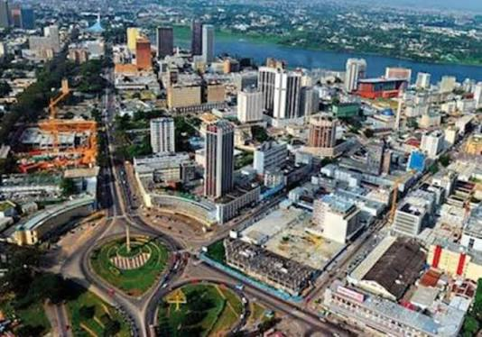
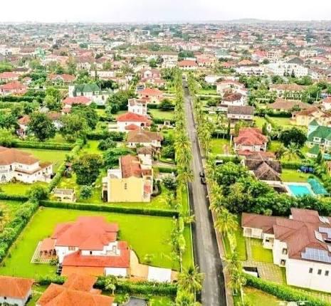
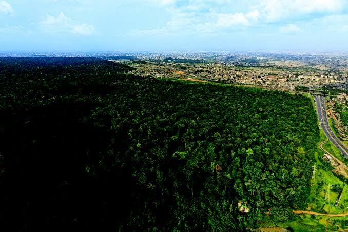
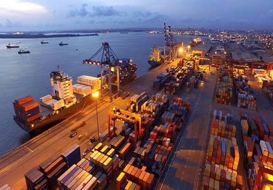
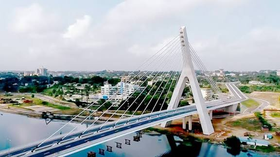
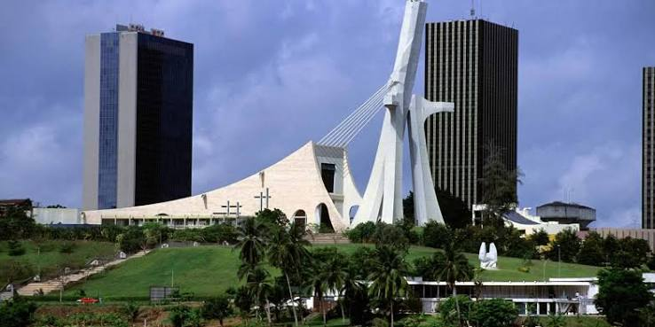
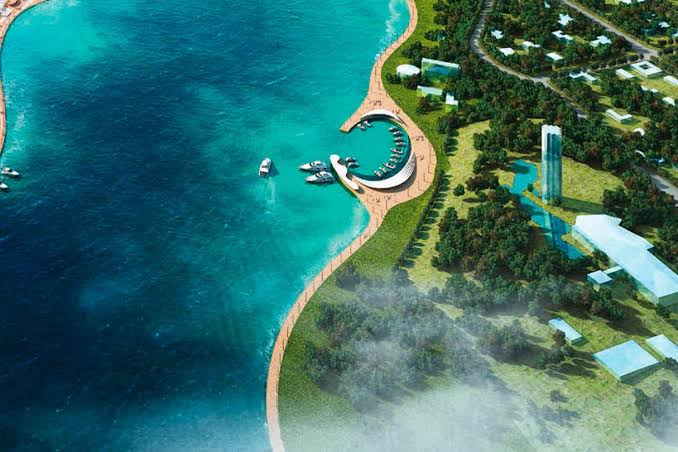
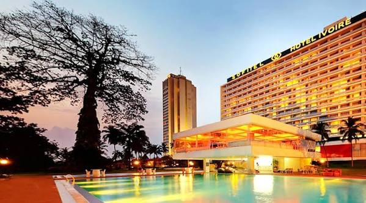
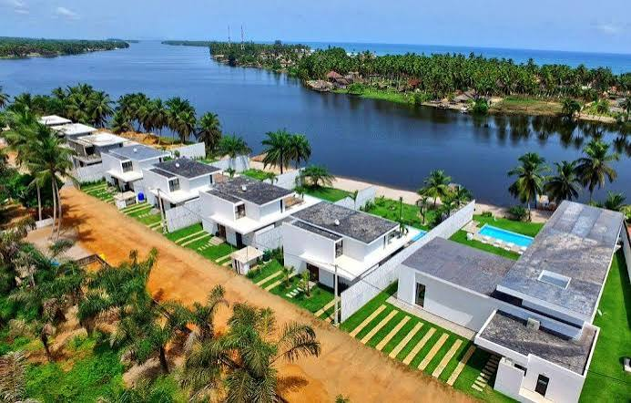
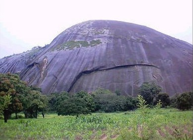

Abidjan History
Abidjan was founded in 1898 as a French trading post. It quickly grew into the economic heart of Ivory Coast. The opening of the Vridi Canal in 1950 transformed the city into a major port and accelerated its economic development.
From 1900 to 1960, Abidjan became the administrative capital of the French colony. After independence in 1960, it remained the country's economic center and continued attracting investors from around the world.
Today, Abidjan is the largest city in Ivory Coast, with more than 4 million residents. It remains an important regional financial center and a major logistics hub for West Africa.
Demographics
Abidjan is a cosmopolitan city with a diverse population:
Population
More than 4 million residents, with annual growth of 3-4%.
Cultural Diversity
Many ethnic and national communities live and work together across the city.
Language
French is the official language, and several local languages are also spoken.
Economy
Abidjan is the economic engine of Ivory Coast and contributes about 60% of national GDP.
Finance
A major banking center with a strong presence of leading international banks.
Industry
Diversified manufacturing sectors including food, textiles, and electronics.
Services
Trade, tourism, telecommunications, and information technology services.
Logistics
A major autonomous port with modern cargo-handling facilities.
Key Districts
Plateau
The business district with high-rises, banks, and corporate headquarters. Busy during the day, it is the economic heart of the city.
Cocody
An upscale residential district with embassies, international schools, and fine restaurants.
Marcory
An important commercial area with markets, small businesses, and light industry.
Important Places
Saint Paul's Cathedral
An impressive religious landmark on the Plateau and an architectural symbol of Abidjan.
Alassane Ouattara Bridge
A striking bridge connecting both sides of the Ebrie Lagoon and offering a unique panoramic view.
Banco National Park
A protected nature reserve with dense forest, rich wildlife, and hiking trails.
Autonomous Port of Abidjan
One of West Africa's main trade ports, supported by modern facilities.
Local Events
Abidjan regularly hosts economic, cultural, and commercial events:
- Ivory Coast International Fair
- African cinema festivals and cultural programs
- Regional economic conferences
- Industry trade exhibitions
- Cultural and artistic events
- Major sporting events
Photo Gallery
Discover the beauty and energy of Abidjan through images.











Investment Opportunities
Strong Growth
A growing economy with an annual growth rate of 5-7%.
Modern Infrastructure
Roads, ports, and world-class facilities.
Skilled Workforce
An educated and multilingual population.
Political Stability
A stable and predictable business environment.
Ready to Invest?
Join the Abidjan Chamber of Commerce and take advantage of the opportunities offered by this dynamic region.